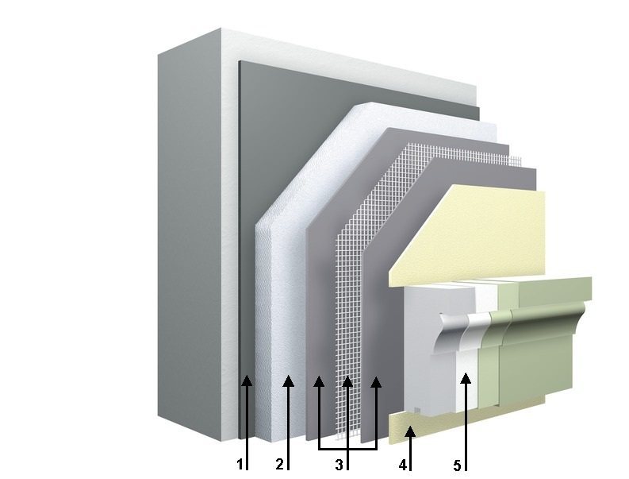

Контакты:
Адрес:
Россия, (355045)
Ставропольский край
г. Ставрополь
ул. 50 лет ВЛКСМ 34/2
Органические фасадные системы - StoTherm Classic
Самая наша надежная, ударопрочная и долговечная система утепления фасада!
StoTherm Classic свыше 50 лет успешно используется в строительной практике: более 150 миллионов квадратных метров обустроенных фасадных площадей на всех пяти континентах - вот результат этого уникального опыта. Все эти годы система непрерывно совершенствовалась и зарекомендовала себя как надежная и долговечная конструкция. Способность выдерживать 10-кратные механические нагрузки, максимальная устойчивость к образованию трещин, отсутствие цемента во всех составных компонентах и многообразие вариантов финишной отделки - это те преимущества, которые делают StoTherm Classic непревзойденной системой теплоизоляции фасада.
Возможности использования:
- новое строительство, реконструкция и ремонт жилых, общественных, промышленных зданий и сооружений;
- типы стеновых оснований: бетон, известково-песчаный камень, кирпич, пористый бетон, панельные блоки (трехслойные панели), гладкая лицевая кладка, дерево;
- деревянное домостроение;
- неровности основания до 3 см (в массивных конструкциях);
- толщина теплоизоляционного слоя до 400 мм.
Основные свойства:
- Ударная прочность в 10 раз выше по сравнению с минеральными системами (выдерживает ударные нагрузки силой до 60 Дж).
- Максимальная защита от трещин. Долговечность и надёжность за счёт не содержащих цемента компонентов.
- Безграничные возможности финишной отделки.
- Фасад может быть с «эффектом лотоса®»/Lotus-Effect® - эффект самоочищения.
- Малая нагрузка на стены и конструкцию дома за счёт невысокого веса системы.
- Содержит средства защиты против микроорганизмов (плесень, грибки).
- Возможность применения в каркасно-панельном строительстве.
- Имеется техническое свидетельство РФ, класс пожарной опасности системы в том числе и с декоративными элементами StoDeco – К0 по ГОСТ 31251-2003
Структура системы:
- 1. Приклеивание:Sto-Baukleber (минеральный клей) или Sto-Turbofix (клей на основе полиуретановой пены).
- 2. Утеплитель:Фасадная пенополистирольная плита (дюбелирование при необходимости).
- 3. Армирование:Sto-Armierungsputz - готовая к применению органическая армирующая масса + устойчивая к щелочам сетка из стекловолокна Sto-Glasfasergewebe.

- 4. Отделочное покрытие:Sto-Silkolit K (колеруемая органическая силиконовая штукатурка) или StoLotusan (колеруемая силиконовая штукатурка с эффектом лотоса).
- 5. Финишная краска (при необходимости):Lotusan - самоочищающаяся фасадная краска с эффектом лотоса®/Lotus-Effect®.
- 6. Декоративные элементы (опционно):– лёгкие негорючие декоративные элементы фасада из минерального гранулята Верофил.
↑